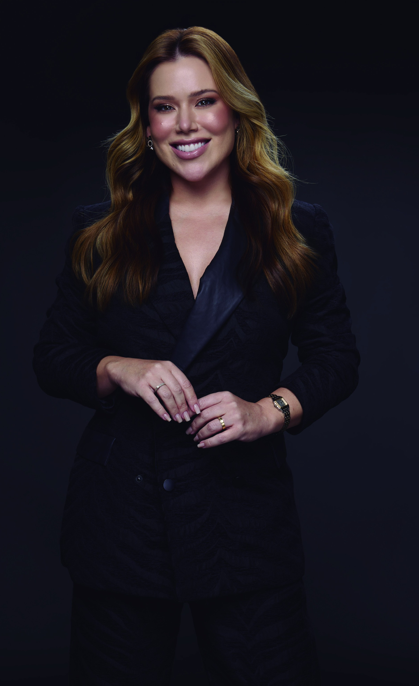

Estética com naturalidade
Cuidar da própria imagem sem apagar os traços, as expressões ou a história de cada pessoa.
A clínica é a protagonista. Os fundadores são rostos de confiança, e a equipe dá continuidade à experiência.
A Feel Alive reúne dermatologia, estética, nutrologia, nutrição e Recovery em uma experiência individualizada.
Nosso diferencial é a conexão entre essas frentes, conduzida por pessoas que compartilham a mesma filosofia de cuidado.
Cuidar da própria imagem sem apagar os traços, as expressões ou a história de cada pessoa.
Observar hábitos, energia, bem-estar, acompanhamento clínico e objetivos de longo prazo.
Criar espaço para descanso e bem-estar dentro de uma rotina que muitas vezes exige demais.

Uma visão que valoriza a naturalidade e a beleza vivida em cada fase, sem incentivar a busca por uma idade que já passou. Criadora dos protocolos autorais Natural Face e Natural Lift.
Amplia o olhar para saúde e longevidade, com acompanhamento que considera hábitos, rotina e objetivos individuais de longo prazo. Desenvolveu o NeuroMap, avaliação que orienta etapas do cuidado.
No Domo Business, ao lado do Shopping Metrópole, em São Bernardo do Campo. Ambientes de luz suave, madeira e tecido — e um circuito de Recovery dentro da própria clínica.
A Dra. Bony abre a conversa sobre naturalidade. O Dr. Guilherme amplia o olhar para saúde e longevidade. A equipe e a experiência da clínica transformam esse encontro em Feel Alive.